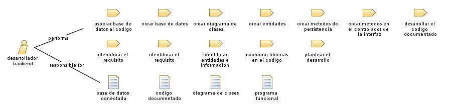

Role: desarrollador backend
Un desarrollador backend es un profesional especializado en la programación y desarrollo de la parte del sistema de software que se encarga de la lógica de negocios, la gestión de datos y la comunicación entre el servidor y el cliente.
Relationships

Primary Performs
asociar base de datos al codigo
crear base de datos
crear diagrama de clases
crear entidades
crear metodos de persistencia
crear metodos en el controlador de la interfaz
desarrollar el codigo documentado
identificar el requisito
identificar el requisito
identificar entidades e informacion relevante para el modelador
involucrar librerias en el codigo
plantear el desarrollo
Modifies
base de datos conectada
codigo documentado
diagrama de clases